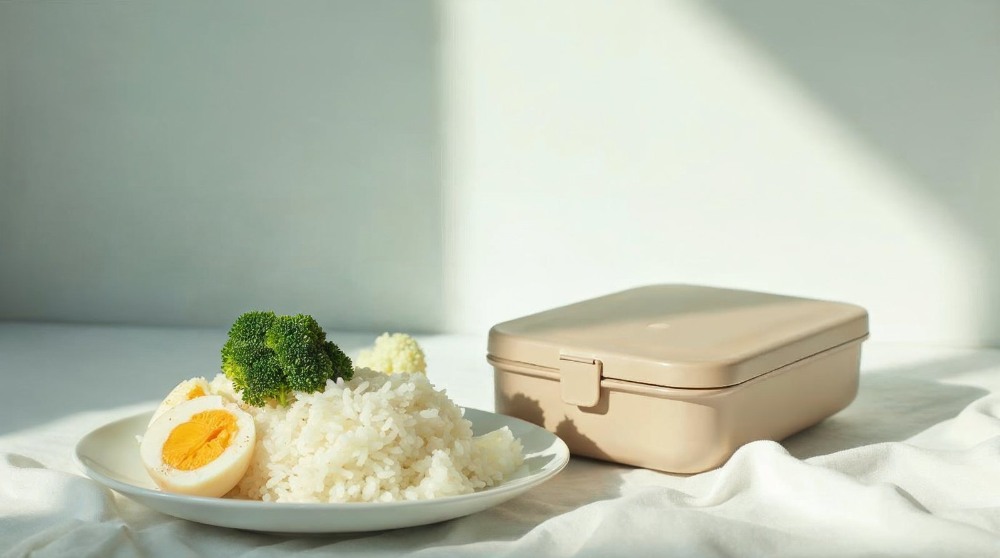
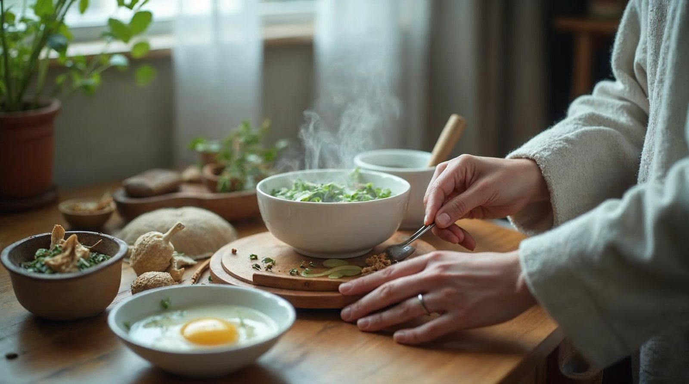
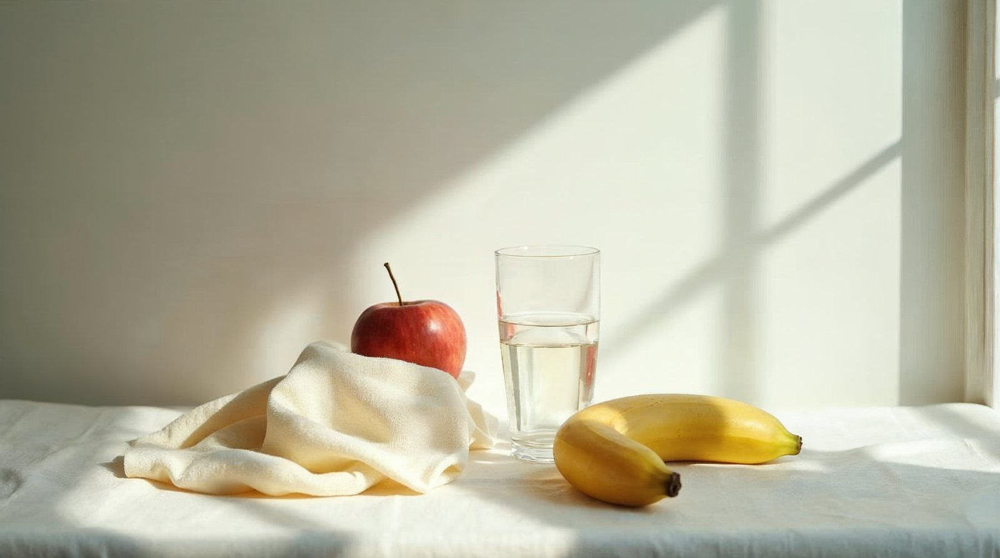

이종호 한의사 감수좋은꿈참사랑한의원 대표원장 (한의사 면허번호 19769)발행 2026-11-24 · 수정 2026-11-26
이 글의 차례
- 왜 이런 불편이 생길 수 있나요
- 왜 편의점 식사가 이어지면 금방 또 배가 고플까요?
- 붓기와 더부룩함, 음식 때문일까요, 다른 원인 때문일까요?
- 먼저 이렇게 여쭙니다
- 일상에서 먼저 해 볼 수 있는 것
- 편의점 한 끼, 이렇게 조합해 보세요
- 영양성분표에서는 무엇부터 보면 될까요?
- 2주씩 한 가지, 이런 순서로 바꿔 볼 수 있습니다
- 상황별 예시
- 학원 수업 사이처럼 시간이 빠듯할 때는?
- 밤늦은 편의점 방문은 어떻게 줄일까요?
- 물은 언제, 어떻게 마시면 좋을까요?
- 스스로 점검해 보세요
- 편의점 식사가 길어질 때 함께 챙길 것
- 한의원에서 함께 살필 수 있는 경우
- 첫 방문에서는 이렇게 이야기를 나눕니다
- 얼마나 지켜보고 언제 상담할까요
- 이렇게 기록해 오시면 상담이 쉬워집니다
- 이런 증상은 먼저 확인이 필요합니다
- 함께 읽으면 좋은 글
편의점을 끊을 필요는 없고, 국물을 남기고 한 가지를 더하는 작은 변화부터 시작하면 오래 이어 가기 쉽습니다. 메뉴를 한 번에 바꾸려 하면 며칠 못 가는 경우가 많아, 한 번에 한 가지씩 바꾸는 순서를 정해 두는 것부터 권합니다.
노량진 학원가에서 시험을 준비하는 분, 상도동 숭실대 근처에서 자취하는 학생, 장승배기·대방 쪽 사무실에서 늦게까지 일하는 직장인분들은 편의점에서 한 끼를 해결하는 날이 많다고 하시는데, 라면과 삼각김밥만 이어지는 날이 길어지면 속이 더부룩하거나 몸이 붓는다고 느끼는 분도 있습니다.
왜 이런 불편이 생길 수 있나요
- 라면과 가공식품은 짠 편이라 많이 먹은 다음 날 얼굴이나 손이 붓는다고 느끼는 분이 있습니다.
- 탄수화물 위주로 먹고 단백질과 채소가 빠지면 금방 다시 배고파 간식이 늘기 쉽습니다.
- 단 음료를 함께 마시는 습관은 하루에 먹는 양을 생각보다 크게 늘립니다.
- 밤늦게 편의점에 들르는 날이 많으면 늦은 식사가 잠과 아침 입맛에도 영향을 줍니다.
- 학원이나 일 사이에 서서 급하게 먹으면 잘 씹지 않고 넘기게 되어 속이 더부룩해지는 분도 있습니다.
왜 편의점 식사가 이어지면 금방 또 배가 고플까요?
삼각김밥, 빵, 라면처럼 정제된 탄수화물 위주의 한 끼는 빨리 소화되어 먹은 지 얼마 안 돼 다시 허기가 찾아오기 쉽습니다. 그러면 오후나 밤에 과자와 단 음료를 더 찾게 되어 하루에 먹는 양이 늘기 쉽습니다.
달걀이나 두부 같은 단백질, 채소처럼 씹을 거리가 있는 음식이 함께 들어가면 포만감이 조금 더 오래가는 편입니다. 그래서 메뉴를 통째로 바꾸기보다 '하나 더하기'부터 권하는 것입니다.
붓기와 더부룩함, 음식 때문일까요, 다른 원인 때문일까요?
짠 음식을 많이 먹은 다음 날 아침에만 얼굴이 붓고 낮이 되면 빠진다면 식사의 영향을 먼저 생각해 볼 수 있습니다. 국물을 남기고 물을 충분히 마신 주에 붓기가 덜하다면 그 가능성이 더 커집니다.
반면 식사와 상관없이 다리가 계속 붓거나 손가락으로 눌렀을 때 자국이 오래 남는다면, 음식보다 콩팥·심장·간 같은 다른 원인이 없는지 병원에서 먼저 확인해 보셔야 합니다. 더부룩함도 빈속에 쓰리거나 밤에 신물이 올라온다면 위 상태를 함께 살펴봅니다.
먼저 이렇게 여쭙니다
- 일주일에 편의점으로 끼니를 해결하는 날이 며칠인가요?
- 주로 고르는 메뉴는 라면, 도시락, 삼각김밥, 빵 가운데 어떤 것인가요?
- 라면 국물까지 다 드시는 편인가요?
- 먹고 난 뒤 속이 더부룩하거나 얼굴·손이 붓는다고 느끼시나요?
- 한 끼를 먹는 데 보통 몇 분이 걸리고, 앉아서 드시나요?

일상에서 먼저 해 볼 수 있는 것
- 라면을 먹을 때는 국물을 남기고 삶은 달걀이나 두부를 하나 더하기
- 도시락에 컵 샐러드나 바나나처럼 채소·과일 한 가지 곁들이기
- 단 음료 대신 물이나 무가당 차 고르기
- 밤늦게 들르는 날을 줄이도록 퇴근이나 학원 수업이 끝나기 전에 미리 한 끼 챙겨 두기
- 서서 먹기보다 10분이라도 앉아서 천천히 씹으며 먹기
- 이번 주에 바꿀 것 한 가지만 정하고, 2주쯤 이어 간 뒤 다음 한 가지로 넘어가기
편의점 한 끼, 이렇게 조합해 보세요
- 주식 하나: 삼각김밥, 주먹밥, 도시락 밥, 고구마 가운데 하나
- 단백질 하나: 삶은 달걀, 두부, 닭가슴살, 우유나 두유 가운데 하나
- 채소·과일 하나: 컵 샐러드, 방울토마토, 바나나 가운데 하나
- 음료: 물이나 무가당 차
이 네 칸을 머릿속에 그려 두고 진열대 앞에서 한 칸씩 채운다고 생각해 보세요. 라면을 고른 날에는 주식 칸을 라면으로 두고, 단백질과 채소 칸을 하나씩 채우며 국물은 남깁니다.
영양성분표에서는 무엇부터 보면 될까요?
영양성분표를 다 읽으려면 복잡하게 느껴지니, 처음에는 나트륨과 당류 두 줄만 보셔도 충분합니다. 같은 종류의 도시락이나 음료라도 제품마다 차이가 꽤 나는 경우가 있습니다.
한 가지 놓치기 쉬운 것은 표시 기준입니다. 1회 제공량 기준으로 적힌 제품은 한 봉지를 다 먹으면 두세 배가 되기도 해서, 총 내용량 기준인지 먼저 확인해 보세요.
단 음료는 당류 숫자를 한 번만 확인해 봐도 고르는 기준이 달라질 수 있습니다. 숫자를 외울 필요는 없고, 자주 사는 것 두세 가지만 비교해 두면 됩니다.
2주씩 한 가지, 이런 순서로 바꿔 볼 수 있습니다
- 1~2주: 단 음료를 물이나 무가당 차로 바꾸기
- 3~4주: 라면 국물 남기기와 삶은 달걀 하나 더하기
- 5~6주: 도시락에 채소나 과일 한 가지 곁들이기
- 7~8주: 밤 9시 이후 편의점 들르는 날을 일주일에 하루 줄이기
순서는 사람마다 달라도 괜찮습니다. 가장 쉬운 것부터 시작해 성공한 경험을 먼저 쌓는 것이 다음 단계를 이어 가는 힘이 됩니다.

상황별 예시
- 예를 들어 노량진 학원가에서 시험을 준비하며 점심은 삼각김밥, 저녁은 컵라면으로 수업 사이에 서둘러 먹는 경우에는 메뉴를 바꾸기 전에 앉아서 먹는 시간을 먼저 확보하고 삶은 달걀이나 두유를 하나 더하는 것부터 함께 정합니다.
- 예를 들어 자취하는 대학생이 밤 11시에 편의점 도시락과 단 음료로 하루 두 번째 끼니를 먹는 경우에는 단 음료를 물로 바꾸고, 밤에는 국물 요리보다 밥과 반찬이 나뉜 도시락을 고르는 방법을 이야기합니다.
- 예를 들어 동작구 사무실에서 야근이 잦은 직장인이 저녁을 편의점 라면으로 때우고 다음 날 아침 얼굴이 붓는다고 느끼는 경우에는 국물을 남기는 것과 함께 야근 전에 미리 저녁을 챙기는 시각을 정해 봅니다.
- 예를 들어 아침을 편의점 빵과 달달한 커피 음료로 해결하고 오전 11시만 되면 다시 배가 고프다는 경우에는 빵을 주먹밥이나 삶은 달걀이 들어간 조합으로 바꾸고, 커피는 무가당으로 고르는 것부터 함께 정합니다.
학원 수업 사이처럼 시간이 빠듯할 때는?
노량진 학원가처럼 쉬는 시간이 10~15분뿐이라면 편의점 앞에서 고르는 시간조차 아깝게 느껴집니다. 이럴 때는 매일 고민하지 않도록 자주 사는 조합 두세 가지를 미리 정해 두는 것이 좋습니다.
예를 들어 '주먹밥 하나, 삶은 달걀 하나, 두유 하나'처럼 고정 조합을 정해 두면 진열대 앞에서 망설이지 않고 바로 고를 수 있습니다. 질릴 때마다 한 칸만 바꾸면 되니 오래 이어 가기도 쉽습니다.
전날 밤 집에서 바나나나 삶은 달걀을 가방에 넣어 두는 것도 시간을 아끼는 방법입니다. 편의점에서는 주식만 사면 되니 고르는 시간이 더 줄어듭니다.
밤늦은 편의점 방문은 어떻게 줄일까요?
밤 10시가 넘어 편의점에 들르면 배고픔과 피로가 겹쳐 라면이나 과자처럼 자극적인 것을 고르기 쉽습니다. 저녁을 조금 앞당겨 챙겨도 귀갓길의 허기가 남는 날이 있지요.
귀갓길에 편의점 앞을 지나야 한다면 집에 우유나 과일처럼 가벼운 것을 미리 두고, '집에 가면 먹을 게 있다'는 생각으로 지나쳐 보세요. 들르더라도 물이나 차만 사서 나오는 날을 하루씩 늘려 가면 됩니다.
물은 언제, 어떻게 마시면 좋을까요?
짠 음식을 자주 먹는 분은 물을 조금 더 챙겨 마시는 것이 좋습니다. 한 번에 많이 마시기보다 아침에 일어나 한 컵, 식사 사이마다 한 컵씩 나눠 마시는 방식이 부담이 적습니다. 다만 심장이나 콩팥 질환으로 물이나 단백질 양을 조절하라는 안내를 받으셨다면 그 지침을 먼저 따르세요.
텀블러나 물병을 가방에 넣고 다니면 단 음료를 사는 횟수를 줄이기도 쉽습니다. 다만 잠들기 직전에 물을 많이 마시면 밤중에 화장실 때문에 깰 수 있어 저녁 이후에는 조금씩만 드세요.
스스로 점검해 보세요
- 일주일에 나흘 넘게 편의점으로 끼니를 해결한다
- 라면 국물을 거의 다 마신다
- 단 음료나 커피 음료를 하루 두 병 넘게 마신다
- 달걀·두부·우유 같은 단백질 없이 탄수화물만 먹는 끼니가 많다
- 서서 먹거나 10분 안에 급하게 먹는 날이 많다
- 밤 9시가 넘어 편의점에 들르는 날이 일주일에 사흘 이상이다
- 다음 날 아침 얼굴이나 손이 붓는다고 느낀다
해당하는 항목 가운데 가장 바꾸기 쉬운 것 하나를 이번 주의 목표로 정해 보세요.
편의점 식사가 길어질 때 함께 챙길 것
편의점 식사가 몇 달씩 이어지면 채소와 과일이 부족해지면서 화장실 리듬이 흐트러지는 분이 있습니다. 변이 딱딱해지거나 며칠씩 거르는 날이 늘었다면 채소·과일 칸을 먼저 채우고 물을 조금 더 챙겨 보세요.
오래 앉아 공부하거나 일하는 분이라면 식사 뒤 10분 정도 걷는 습관도 함께 붙여 보시기를 권합니다. 먹고 바로 앉으면 속이 더부룩한 채로 오후를 보내기 쉬운데, 짧게라도 걸으면 속이 덜 무겁게 느껴질 수 있습니다.
한 주에 한두 번이라도 집밥이나 식당의 백반처럼 여러 반찬이 있는 식사를 끼워 넣는 것도 좋습니다. 매일 바꾸기는 어려워도 주말 한 끼를 정해 두면 부담이 적습니다.

한의원에서 함께 살필 수 있는 경우
- 더부룩함과 속쓰림이 자주 반복되는 경우 식사 시각과 소화 상태를 함께 살핍니다.
- 아침에 얼굴이나 손이 자주 붓는 경우 식사와 물 마시는 습관, 잠을 함께 살핍니다.
- 끼니가 불규칙해 체중과 입맛이 크게 흔들리는 경우 생활 리듬 전체를 함께 살핍니다.
좋은꿈참사랑한의원에서는 모든 분께 맥부터 짚고, 맥을 짚는 동안에도 식사·잠·활동의 하루 흐름을 여쭙습니다. 필요하다고 판단될 때 인바디 770으로 체성분을 보거나 당화혈색소 같은 검사로 함께 확인합니다.
첫 방문에서는 이렇게 이야기를 나눕니다
처음 오시면 모든 분처럼 맥을 먼저 짚고, 그동안 지난 일주일 편의점에서 무엇을 골랐는지, 몇 시에 어디서 먹었는지를 들려 달라고 부탁드립니다. 영수증이나 결제 내역을 사진으로 모아 오시면 기록을 따로 쓰지 않아도 자주 고르는 조합을 함께 찾을 수 있습니다.
소화와 화장실 리듬, 붓기가 생기는 때, 잠드는 시각도 함께 여쭙습니다. 시험 준비나 야근으로 긴장이 이어지는 시기라면 그 영향도 같이 살펴봅니다.
이야기를 마치면 지금 습관 가운데 2주 동안 바꿔 볼 한 가지를 함께 고르고, 그동안 속과 붓기를 어떻게 적어 올지 알려 드립니다. 침이나 한약 상담이 필요한지도 상태에 맞춰 말씀드리고, 검사 수치의 진단과 약 조절이 필요하면 내과 진료를 함께 안내합니다.
얼마나 지켜보고 언제 상담할까요
- 한 가지씩 바꾼 뒤 2주쯤 지켜보며 속과 붓기, 배고픔이 어떻게 달라지는지 적어 보세요.
- 바꿔 본 뒤에도 더부룩함이나 속쓰림이 한 달 넘게 일주일에 여러 번 이어지거나, 아침 붓기가 매일 반복되면 상담을 받아 보시기를 권합니다.

이렇게 기록해 오시면 상담이 쉬워집니다
- 일주일 편의점 식사 횟수와 자주 고르는 메뉴·음료
- 먹는 시각(특히 밤 9시 이후 식사 횟수)
- 붓기가 심한 때와 부위
- 최근 건강검진 결과(혈압·혈당 등)
- 앉아서 먹은 끼니와 서서 급하게 먹은 끼니
- 화장실 리듬의 변화(변이 딱딱해지거나 거르는 날)
- 바꿔 본 한 가지와 그 뒤 달라진 점
바쁜 하루에 편의점으로라도 끼니를 챙기고 계신 것부터가 애쓰고 계신 것입니다. 오늘은 국물을 반만 남기는 것 하나부터 해 보세요. 다음에 오시면 그동안 바꿔 본 한 가지가 어땠는지, 속과 붓기는 어떤지부터 여쭙겠습니다.
이런 증상은 먼저 확인이 필요합니다
- 붓기가 한쪽 다리에만 심하거나 숨이 차면서 붓는 경우
- 검은 변이나 피가 섞인 변을 본 경우
이런 신호가 있으면 한의원보다 가까운 병원이나 응급실을 먼저 찾으세요.
함께 읽으면 좋은 글
- 자취하며 편의점 음식으로 끼니를 때우다 체중과 검진 수치가 걱정될 때는 어떻게 살피나요?
- 야근할 때마다 책상 서랍 간식에 자꾸 손이 갈 때는 어떻게 살피나요?
- 야식을 끊기 어려울 때는 어떤 점을 먼저 살펴보나요?

여쭙는 것
- 일주일에 편의점으로 끼니를 해결하는 날이 며칠인가요?
- 주로 고르는 메뉴는 라면, 도시락, 삼각김밥, 빵 가운데 어떤 것인가요?
- 라면 국물까지 다 드시는 편인가요?
생활에서 해 볼 것
- 라면을 먹을 때는 국물을 남기고 삶은 달걀이나 두부를 하나 더하기
- 도시락에 컵 샐러드나 바나나처럼 채소·과일 한 가지 곁들이기
- 단 음료 대신 물이나 무가당 차 고르기
한의원에서 함께 살필 것
- 더부룩함과 속쓰림이 자주 반복되는 경우 식사 시각과 소화 상태를 함께 살핍니다.
- 아침에 얼굴이나 손이 자주 붓는 경우 식사와 물 마시는 습관, 잠을 함께 살핍니다.
- 끼니가 불규칙해 체중과 입맛이 크게 흔들리는 경우 생활 리듬 전체를 함께 살핍니다.
먼저 확인이 필요한 신호
- 붓기가 한쪽 다리에만 심하거나 숨이 차면서 붓는 경우
- 검은 변이나 피가 섞인 변을 본 경우
한눈에 보는 표
| 구분 | 핵심 |
|---|---|
| 여쭙는 것 | 일주일에 편의점으로 끼니를 해결하는 날이 며칠인가요? 주로 고르는 메뉴는 라면, 도시락, 삼각김밥, 빵 가운데 어떤 것인가요? |
| 생활에서 해 볼 것 | 라면을 먹을 때는 국물을 남기고 삶은 달걀이나 두부를 하나 더하기 도시락에 컵 샐러드나 바나나처럼 채소·과일 한 가지 곁들이기 |
| 한의원에서 함께 살필 것 | 더부룩함과 속쓰림이 자주 반복되는 경우 식사 시각과 소화 상태를 함께 살핍니다. 아침에 얼굴이나 손이 자주 붓는 경우 식사와 물 마시는 습관, 잠을 함께 살핍니다. |
| 먼저 확인이 필요한 신호 | 붓기가 한쪽 다리에만 심하거나 숨이 차면서 붓는 경우 검은 변이나 피가 섞인 변을 본 경우 |
자주 묻는 질문
편의점 음식은 아예 피해야 하나요?
그렇지 않습니다. 무엇을 함께 고르고 어느 시각에 먹는지가 더 중요해, 지금 습관에서 바꾸기 쉬운 것부터 함께 정리합니다.
단백질 음료로 끼니를 대신해도 되나요?
바쁜 날 한 번쯤은 괜찮지만 매 끼니를 대신하면 씹는 식사가 줄어 금방 배고파지는 분도 있습니다. 하루 한두 끼는 밥과 반찬이 있는 식사를 유지하시기를 권합니다.
편의점에서 단백질을 더하려면 무엇을 고르면 될까요?
삶은 달걀, 두부, 우유나 두유, 닭가슴살 같은 것을 하나 곁들여 보세요. 이미 짠 음식이 많다면 양념이 적은 것을 고르시기를 권합니다.
진료 시간은 어떻게 되나요?
좋은꿈참사랑한의원은 평일 09:30~20:00(점심 13:00~14:00), 토·일·공휴일 09:30~15:00에 진료합니다.
좋은꿈참사랑한의원은 재진 때 지난번 이야기부터 이어서 여쭙니다. 진료시간과 예약은 오시는 길에서 확인하세요.
어디서 상담받을 수 있나요?
좋은꿈참사랑한의원은 서울 동작구 만양로2길 2 신성빌딩 3층·5층(서울 동작구 상도동, 7호선 상도역 3번 출구 근처)에 있습니다. 한의사 3명(이종호 대표원장, 조영기 수석진료원장, 정원영 진료원장)이 진료합니다. 진료시간은 평일 09:30~20:00(점심 13:00~14:00), 토·일·공휴일 09:30~15:00이며, 방문 전 전화로 확인을 권합니다. 예약은 네이버 예약, 카카오톡 상담, 전화 02-815-7510로 받습니다.
이 글은 일반적인 건강 정보이며 개인의 진단이나 치료를 대신하지 않습니다. 증상이 있거나 복용 중인 약이 있다면 진료를 통해 확인하세요. 치료 효과는 개인마다 다를 수 있습니다.
작성 기준: 일반적으로 알려져 있는 건강 정보를 참고해 정리했습니다(대표원장 감수). 증상 기록은 1~2주 동안 하루 1회, 비슷한 시간에 적어 오시면 지난 상태와 비교하기 쉽습니다.